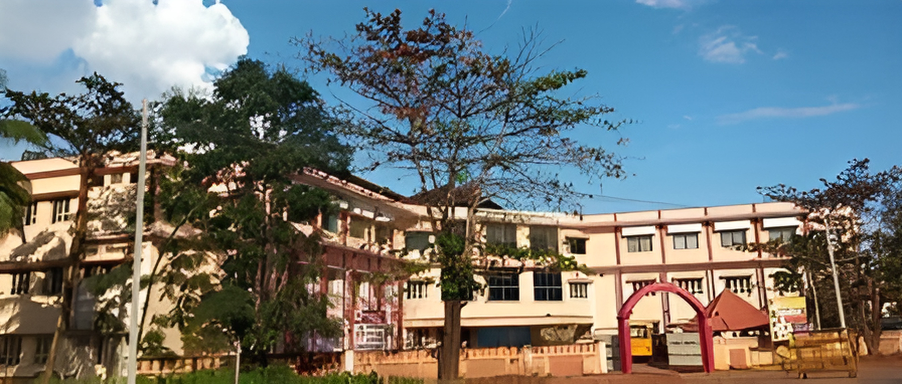

VIVEKANANDA SCHOOL,TENKILA
VIVEKANANDA VIDYAVARDHAKA SANGHA had visualized the need for a School, with a concrete objective that is to launch the children of Puttur to the greatest height who could uphold the culture and spiritual heritage of the country in the light of knowledge in 1987 Primary school was established and in 1994 it extended to high school section also. It is located at Tenkila which has serene and calm surroundings for studies. Co-education is followed here.
